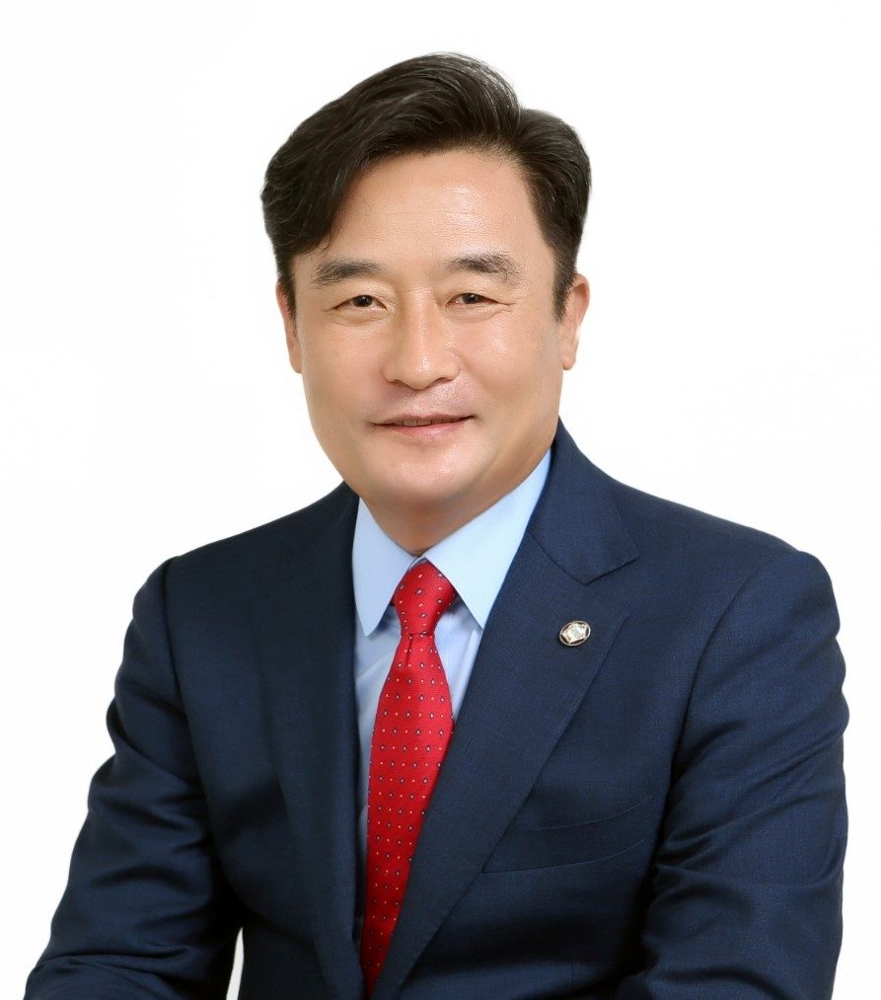

오세희 의원
궤변
"제가 이견 있는 게 아니라 저쪽이 많아요."
정부의 수정안에 대해 동의하는지 묻는 소위원장의 구체적인 질문에 대해, 본인의 명확한 찬반 의사를 밝히지 않고 '저쪽'이라는 모호한 제3자를 언급하며 답변을 회피함.
| 의원 이름 | 점수 | 코멘트 |
|---|---|---|
| 2.06점 | 정부 측에 대해 비아냥거리는 말투와 공격적인 태도를 빈번하게 보임. | |
| 1.88점 | 정책적 비판을 넘어 정부 관계자를 향해 '거짓말', '인색하다' 등 공격적이고 감정적인 표현을 사용함. | |
| 1.50점 | 공공성 강조를 위해 '썩어 있고'와 같은 다소 감정적이고 강한 표현을 사용함. | |
| 1.29점 | 전반적으로 논리적이나, 상대 위원의 의견을 '지나치게'라고 표현하며 다소 과소평가하는 뉘앙스를 보임. | |
| 1.01점 | 전반적으로 회의를 원활히 진행하나, 정부 측을 향해 '꼬리 내린다'와 같은 감정적이고 비하적인 표현을 사용하여 품격이 다소 부족함. | |
|
 |
0.60점 | 정확한 수치 확인을 통해 오류를 바로잡는 등 사실 관계에 기반한 날카롭지만 예의 바른 질의를 수행함. |
| 0.58점 | 예산 범위와 처리 시한 등 구체적인 사항을 확인하며 효율적인 회의 진행에 기여함. | |
| 0.00점 | 간결하고 정중한 인사말을 통해 예의를 갖춤. |
궤변
정부의 수정안에 대해 동의하는지 묻는 소위원장의 구체적인 질문에 대해, 본인의 명확한 찬반 의사를 밝히지 않고 '저쪽'이라는 모호한 제3자를 언급하며 답변을 회피함.
막말
정부 부처의 행정적 협의 과정을 '꼬리를 내린다'는 비하적인 표현을 사용하여 묘사함으로써, 관계 기관의 자존심을 깎아내리고 모욕적인 뉘앙스를 풍김.
막말
정부 관계자의 답변 태도를 비꼬며 공격적이고 냉소적인 어조로 발언하여 상대방을 압박함.
막말
정부의 행정적 재량 표현인 '지원할 수 있다'를 '거짓말'이라고 단정 짓고, 재정 당국의 태도를 '인색하다'고 비하하며 감정적으로 공격함.